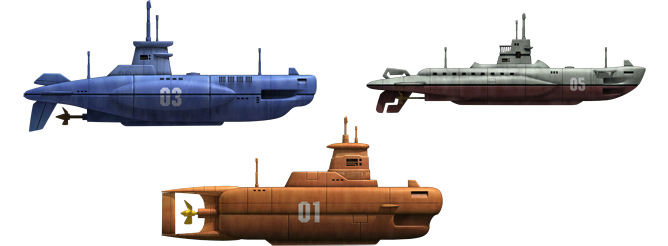
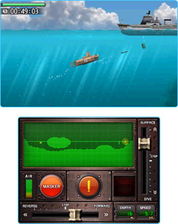
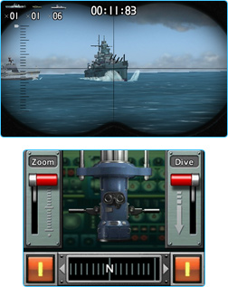
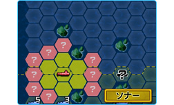
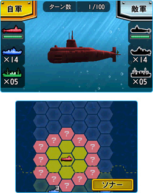

『スティールダイバー』は、潜水艦の操作感や戦略性をテーマとして、アクションやシューティング、シミュレーションの要素が入った3つのモードを楽しめるゲームです。ニンテンドー3DS用ソフトなので、潜水艦や敵の艦隊の映像はリアルな3D立体視で見ることができます。
3つのモードでは、それぞれ潜水艦を操作したり、潜望鏡をのぞいて魚雷を発射したり、自分の潜水艦を含めた艦隊の指揮をとったりすることができます。どのモードも実際に潜水艦を操っているような感覚を味わえるよう、細部にまでこだわって作られています。
|
「潜水艦モード」では、3種類の潜水艦のいずれかを操作してステージのクリアを目指す「ミッション」と、制限時間内でのクリアを目指す「チャレンジ」を選べます。基本的にはオーソドックスな横スクロールのアクションですが、特徴的なのはその操作方法です。

下画面には、本物の潜水艦さながらにたくさんの計器やボタン、操作レバーが表示され、「潜航／浮上」や「前進／後退」のレバーをタッチペンで上下左右に操作できるようになっています。

ただし、これらのレバーを動かしても、急に加速したり停止したりはできません。したがって、計器に表示される地形をあらかじめ確認し、潜水艦をどの方向に動かすかを決めて、少し手前から動き始める必要があります。このあたりはパズルゲームのような感覚もあり、水中で小回りがきかない潜水艦ならではの面白さとも言えるでしょう。
ステージの中には、複雑な地形があったり、巨大な岩を魚雷で破壊しないと通れなかったり、敵の潜水艦が魚雷を発射してきたり、噴火している海底火山があったりと、さまざまな障害が立ちふさがります。ゲームの進行自体はゆっくりですが、こうした障害をすぐ簡単に回避できるわけではないので、プレイ中は頭と手をフル回転させる必要があります。
ちなみに、下画面の計器は3種類の潜水艦の機能や性能にしたがって、微妙に異なっています。一度に発射できる魚雷の本数が違ったり、レバーを動かしたときの加速の具合はもちろん、そもそも潜水艦自体の大きさや形も違うので、ステージによって使う潜水艦を変えてみても楽しいでしょう。
潜水艦の操作に慣れてきたら、自分が最速タイムを出したときの「マイゴースト」や、開発スタッフによる「スタッフゴースト」を表示させてみましょう。半透明の潜水艦がリプレイのゴーストとして表示されるので、このゴーストと競争して最速タイム更新を目指したり、開発スタッフのゴーストの動きをミッション攻略の参考にしたりするとよいでしょう。
|
「潜望鏡モード」は、上画面の潜望鏡で敵の艦船を確認し、魚雷を発射して撃沈するというシューティングゲームです。ニンテンドー3DSのジャイロセンサーに対応しているので、本体を持ったまま体の向きを変えると、潜望鏡の向きも変わるという操作方法が特徴的です（※）。
※
潜望鏡の向きは、下画面のスライドバーをタッチペンで動かして変えることもできます。

魚雷は、発射時に潜望鏡で見ている方向にまっすぐ進みます。魚雷が命中するまでには少しタイムラグがあるので、敵の進行方向と速度を考えて、敵が少し進んだ先のあたりにねらいをつける必要があります。また、クルクル回るイスなどに座ってプレイすると遊びやすいかもしれません。
見事に魚雷が命中すると、派手な音とアクションが爽快です。うまくド真ん中に当たると1発で撃沈させることができるので、最速タイムを目指すなら、あわてることなく、より正確にねらいをつけるようにしましょう。また、敵の魚雷が命中して水もれが起こると修理に時間がかかるので、魚雷が見えたら急いで潜航レバー（Dive）を倒して回避します。
この「潜望鏡モード」では、通常の対艦隊戦と、嵐の海での対艦隊戦、そして対潜水艦戦の3種類のシチュエーションを楽しめます。嵐の海では大波にもまれて潜望鏡もゆれるので、よりねらいをつけるのが難しくなります。さらに対潜水艦戦では、敵が遠すぎて何も見えないことがあります。そんなときは、左にあるズームレバー（Zoom）を倒してみると、潜水艦のスクリューが出している空気の泡がうっすらと見えることがあります。
ちなみに「潜水艦モード」のミッションクリア後には、ボーナスゲームとして「潜望鏡モード」が登場します。ここで見事敵を撃沈すると、潜水艦に貼りつけられる「デカール（シール）」がもらえます。デカールにはたくさん種類があり、同じデカールを一定数集めると「潜水艦モード」での潜水艦の性能がアップします。デカール収集のためにも、しっかり「潜望鏡モード」で練習を積んでおくとよいでしょう。
|
「海戦モード」は、六角形のマス目の上に表示される「潜水艦」「護衛艦」「輸送船」をコマに見立てて、将棋やチェスのようなルールにしたがって動かして遊ぶ、戦略シミュレーションゲームです。敵のすべての輸送船、または潜水艦を撃沈すれば勝利となります。

ゲームはターン制で、自軍と敵軍は1ターンに1つのコマを1回しか動かせません。また、敵が攻撃してきたり、敵がいるマスに入ったり、お互いの潜水艦がソナーを使わない限り、相手のコマのいる場所はわかりません。
また、マップは自軍と敵軍のエリアに分かれていて、潜水艦以外は相手のエリアに入ることはできません。つまり、敵軍の護衛艦や輸送船を撃沈するためには、潜水艦で敵軍エリアに入る必要があります。逆に言えば、敵軍も自軍エリアには潜水艦しか入ってこないことになります。
したがって「海戦モード」では、敵軍エリアの輸送船の撃沈をねらう攻撃的な作戦か、自軍エリアに入ってきた敵の潜水艦の撃沈をねらう守備的な作戦の、大きく分けて2つの戦略があります。もちろん、戦況に応じて途中から作戦を変えたりしてもよいでしょう。しかし、どちらにしても、相手がいる位置をいち早く知り、次のターンでどの位置に移動しているかを予測することが最も重要です。

潜水艦で相手の艦船がいるマスに入ると、「潜望鏡モード」と同様の画面で魚雷を発射して攻撃を仕掛けられます。この場合は一方的に攻撃できることになりますが、魚雷を外してしまうと相手にダメージはありません。
また、護衛艦で敵の潜水艦のいるマスに入った場合、50m／100m／150mの3つのいずれかの深さに爆雷を投下しての攻撃が可能です。潜水艦側も、この3つの深さのどれかに回避を行うので、相手が潜る深さを当てられるかという、じゃんけんのようなシステムと言えます。
「潜望鏡モード」を使った潜水艦の魚雷操作が得意なら攻撃的な作戦を、苦手なら最悪でも3分の1の確率で敵の潜水艦にダメージを与えられる守備的な作戦をとるというのも、考え方の1つかもしれません。
なお、「海戦モード」では対CPU戦だけでなく、通信対戦も行うことができます。頭脳戦を楽しむモードなので、対人戦ではプレイ中におしゃべりで相手を牽制したりといった、対CPU戦ではありえない面白さもたくさんあるはずです。『スティールダイバー』のカードが1枚あれば、ダウンロードプレイで家族や友だちのニンテンドー3DSと対戦できるので、ぜひとも体験してみてください。